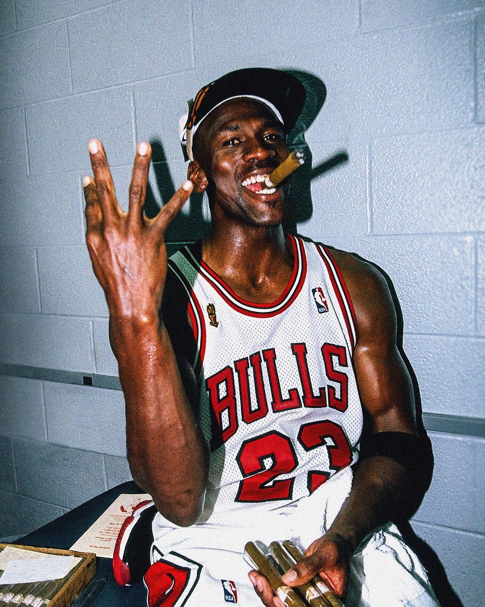
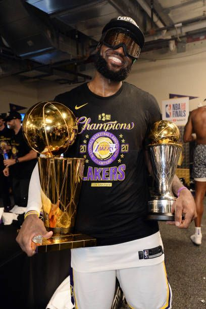
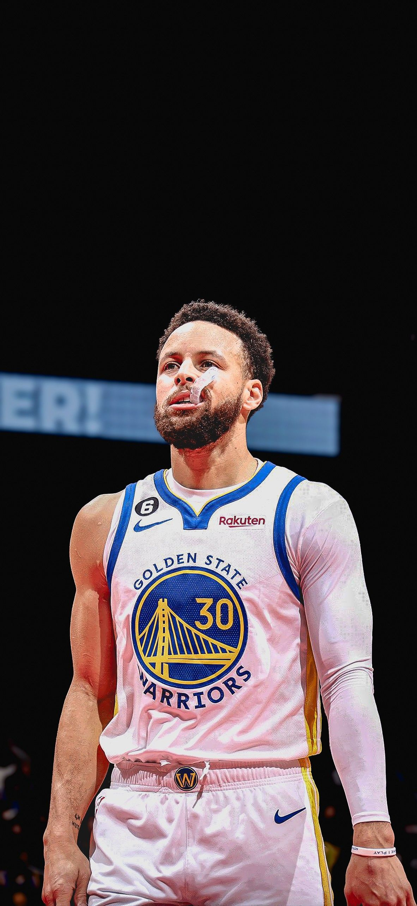
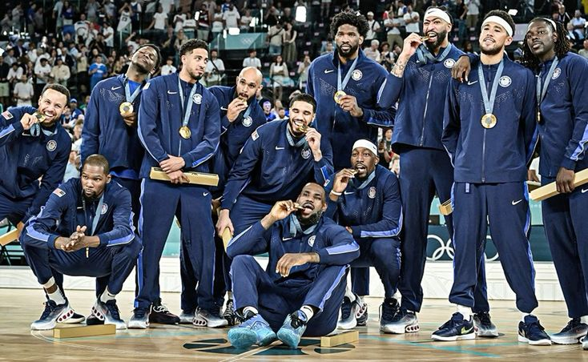
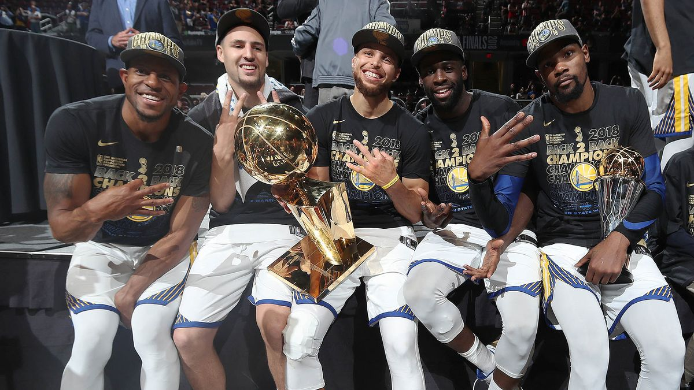
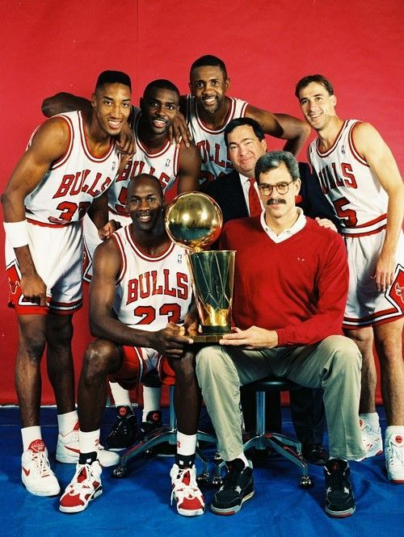

Basquete
Um esporte rápido, cheio de jogadas, estratégia e muita emoção dentro da quadra.
O que é o basquete?
O basquete é um esporte coletivo disputado entre duas equipes. O objetivo é marcar pontos colocando a bola na cesta do adversário, usando passes, dribles e arremessos.
É um esporte que exige velocidade, concentração, habilidade e, principalmente, trabalho em equipe. Cada jogada pode mudar o rumo de uma partida.
Basquete em números
Como surgiu o basquete?
O basquete surgiu em dezembro de 1891, criado pelo professor canadense James Naismith, em Springfield, nos Estados Unidos.
A ideia surgiu durante o inverno, quando Naismith precisava encontrar uma atividade para seus alunos praticarem dentro do ginásio. Ele queria criar um esporte divertido, mas com menos contato físico que o futebol americano.
O esporte acabou fazendo muito sucesso e começou a se espalhar pelos Estados Unidos. Com o passar dos anos, chegou a vários países e se tornou um dos esportes mais conhecidos do mundo.
Regras básicas
🏀 Objetivo
O objetivo é fazer mais pontos que o outro time colocando a bola dentro da cesta.
⏱️ Tempo
A partida é dividida em períodos e cada um possui um tempo definido pelas regras da competição.
👥 Equipes
Cada equipe joga com cinco jogadores dentro da quadra.
🎯 Pontuação
Uma cesta pode valer diferentes quantidades de pontos dependendo de onde o jogador realiza o arremesso.
Jogadores que fizeram história
Alguns jogadores que deixaram sua marca e ajudaram a transformar diferentes épocas do basquete.

Michael Jordan
Jordan é lembrado por sua enorme competitividade e pelas grandes atuações que teve pelo Chicago Bulls. Seu talento e suas conquistas fizeram dele um dos nomes mais conhecidos do basquete.

LeBron James
LeBron se destacou pela força, pela visão de jogo e pela capacidade de participar de praticamente todos os momentos de uma partida. Ele se tornou um dos principais nomes da geração atual.

Stephen Curry
Curry ficou conhecido principalmente pelos seus arremessos de longa distância. Seu estilo de jogo ajudou a mudar a forma como muitas equipes passaram a jogar basquete.
10 grandes nomes do basquete
Jogadores que marcaram diferentes épocas e ajudaram a construir a história do basquete.
- Michael Jordan 6× campeão da NBA
- LeBron James 4× campeão da NBA
- Kareem Abdul-Jabbar 6× campeão da NBA
- Magic Johnson 5× campeão da NBA
- Bill Russell 11× campeão da NBA
- Kobe Bryant 5× campeão da NBA
- Stephen Curry 4× campeão da NBA
- Larry Bird 3× campeão da NBA
- Shaquille O'Neal 4× campeão da NBA
- Tim Duncan 5× campeão da NBA
Times que marcaram época
Equipes que ficaram na memória dos fãs por causa de grandes jogadores, campanhas e momentos especiais.

EUA
A seleção dos Estados Unidos que disputou as Olimpíadas de 2024 contou com várias estrelas da NBA. A equipe conquistou o ouro e manteve a tradição do país no basquete olímpico.

Warriors
O Warriors de 2017 tinha um ataque muito forte e reunia jogadores como Stephen Curry, Kevin Durant, Klay Thompson e Draymond Green. Foi uma das equipes mais dominantes daquela época.

Bulls
O Chicago Bulls ficou mundialmente conhecido durante a era de Michael Jordan. A equipe conquistou grandes títulos e se tornou uma das mais famosas da história da NBA.
Lakers x Bulls — Melhores Momentos
Agora é hora de ver o basquete acontecendo de verdade. Confira algumas das melhores jogadas de uma grande partida da NBA.
Minha trajetória no basquete
Comecei a me interessar pelo basquete quando tinha 15 anos, depois que entrei no IF Baiano. Desde 2025, venho tentando participar das quartas esportivas com o professor André. Foi nesse período que comecei a conhecer melhor o esporte e a treinar mais.
Com o tempo, o basquete acabou se tornando um esporte de que gosto muito. Gosto de estar em quadra, aprender novas jogadas e perceber que consigo melhorar aos poucos.
Ainda tenho bastante coisa para aprender e melhorar. Mas quero continuar treinando e, quem sabe, conseguir jogar cada vez melhor dentro da quadra.

Curiosidades sobre o basquete
No primeiro jogo de basquete, os jogadores usaram uma bola de futebol para jogar.
O basquete foi criado como uma opção para os alunos praticarem esportes dentro do ginásio durante o inverno.
O que começou como uma atividade criada em um ginásio acabou se espalhando pelo mundo e conquistando milhões de fãs.